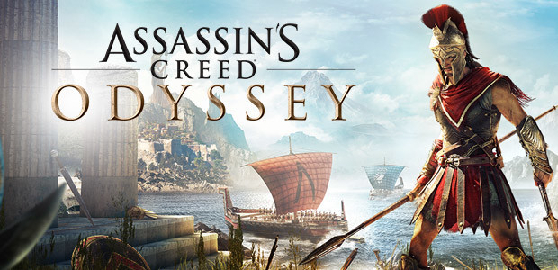

<div class="container">
  <div class="row">
    <div class="about-bg-pg col-12">
      <div class="img-box">
        
      </div>
      
      <table class="table table-dark">
        <thead>
          <tr>
            <th scope="col" colspan="2">Загальне</th>
          </tr>
        </thead>
        <tbody>
          <tr>
            <td>Розробник</td>
            <td>Ubisoft Quebec</td>
          </tr>
          <tr>
            <td>Видавець</td>
            <td>Ubisoft</td>
          </tr>
          <tr>
            <td>Дистриб'ютор</td>
            <td>Epic Games, Uplay, Steam</td>
          </tr>
          <tr>
            <td>Жанр(и)</td>
            <td>Action RPG, Відкритий світ, Стелс</td>
          </tr>
          <tr>
            <td>Платформа</td>
            <td>
              Microsoft Windows, PlayStation 4, Xbox One, Nintendo Switch,
              Stadia
            </td>
          </tr>
          <tr>
            <th class="col" colspan="2">Творці</th>
          </tr>
          <tr>
            <td>Продюсер</td>
            <td>Марк-Алексіс Кот</td>
          </tr>
          <tr>
            <td>Сценарист(и)</td>
            <td>
              Джонатан Дюмон Меліса, МакКубрі, Уго Джард
            </td>
          </tr>
          <tr>
            <td>Ігродизайнер(и)</td>
            <td>Йордан Тібуст</td>
          </tr>
          <tr>
            <td>Композитор(и)</td>
            <td>The Flight</td>
          </tr>
          <tr>
            <th class="col" colspan="2">Технічне</th>
          </tr>
          <tr>
            <td>Дата анонсу</td>
            <td>1 червня 2018</td>
          </tr>
          <tr>
            <td>Дата випуску(и)</td>
            <td>5 жовтня 2018</td>
          </tr>
          <tr>
            <td>Рушій</td>
            <td>Anvil Next 2.0</td>
          </tr>
          <tr>
            <td>Режим гри</td>
            <td>Однокористувацька гра, Цифрова дистрибуція</td>
          </tr>
          <tr>
            <td>Керування</td>
            <td>Геймпад, Клавіатура та миша</td>
          </tr>
          <tr>
            <th class="col" colspan="2">Assassin's Creed</th>
          </tr>
          <tr>
            <td>Попередня гра</td>
            <td>Assassin's Creed Origins</td>
          </tr>
        </tbody>
      </table>

      <div class="wiki">
        <h1 class="h1-title">
          Assassin's Creed Odyssey
        </h1>
        <span>
          <p class="text">
            <b class="ac-text">Assassin's Creed Odyssey </b
            ><i>(укр. Кредо Асасина: Одіссея) </i>— багатоплатформна відеогра
            жанру Action/RPG та стелс, що розроблена студією Ubisoft Quebec і
            була видана компанією Ubisoft. Є одинадцятою грою в серії відеоігор
            Assassin's Creed та двадцятою загалом. Вийшла 5 жовтня 2018 року на
            платформах Microsoft Windows, PlayStation 4, Xbox One і (тільки в
            Японії) для Nintendo Switch 5 жовтня 2018 року. Є приквелом до гри
            Assassin's Creed Origins. Події гри відбуваються в 431 році до н.
            е., сюжет розповідає про вигадану історію Пелопоннеської війни.
            Гравцеві надані на вибір два головні герої: спартанські найманці,
            Алексіос та Кассандра, що є нащадками легендарного царя Леоніда.
            Гравці обирають, на чий бік стати: Делійського союзу на чолі з
            Афінами, або Пелопоннеської ліги очолюваною Спартою. Гру похвалили
            за відкритий світ, візуальні ефекти, битви, історію та персонажів,
            але критикували за гриндінг і включення мікротранзакцій.
          </p>
        </span>
        <h1 class="h1-title">
          Сюжет
        </h1>
        <span>
          <p class="text">
            Події в грі відбуваються в 431 році до н. е., за чотириста років до
            подій Assassin's Creed Origins. У центрі сюжету розігруються події
            Пелопоннеської війни, що відбувалася між давньогрецькими полісами.
            Гравцеві доведеться узяти на себе роль найманця Алексіос або
            Кассандри й битися на боці Афін, які керують Афінським морським
            союзом, або ж Спарти, яка очолює Пелопоннеський союз В теперішньому
            часі триває сюжетна лінія Лейли Гассан, героїні, яка вже раніше була
            в Origins.
          </p>
        </span>
        <h1 class="h1-title">
          Ігровий процес
        </h1>
        <span>
          <p class="text">
            В Assassin's Creed Odyssey робиться ще більший акцент на рольову
            складову, ніж в попередніх іграх серії. У відеогрі будуть присутні:
            інтерактивна система діалогів, нелінійні квести, різні кінцівки та
            можливість завести роман з персонажами будь-якої статі, незалежно
            від статі гравця. Гравець зможе вибрати стать свого персонажа. На
            відміну від Assassin's Creed Syndicate перемикатися між персонажами
            буде не можливо, вибір робиться лише раз на початку гри.
          </p>

          <p class="text">
            Головні герої — Алексіос і Кассандра, є найманцями й нащадками
            спартанського царя Леоніда. В сутичках вони використовують клинок
            списа свого предка, який наділяє їх в бою особливими здібностями. У
            системі розвитку персонажа є три гілки здібностей: асасина з
            навичками непомітності, воїна з акцентом на бойові вміння та
            мисливця, що дозволяє краще стріляти з лука. Доступні різні елементи
            спорядження — нагрудники, шоломи, щити та поручі, які можна
            покращувати. Функцію орлиного зору у головних героїв подібно Байеку
            з Assassin's Creed Origins виконує орел Ікар. Рівень ворогів тепер
            буде збільшуватися разом з рівнем персонажа. Повернеться шкала
            популярності — при скоєнні злочинів на очах в інших, вона буде
            рости, і гравця можуть оголосити в розшук.
          </p>

          <p class="text">
            Ігровий світ складається з 27 зон і є найбільшим в серії, а також
            географічно різноманітним — в ньому присутні снігові гори, ліси,
            піщані пляжі тощо. Значну частину карти займають моря. У гру
            повернуться морські битви. У гравця буде можливість покращувати свій
            корабель, а також найняти практично будь-якого персонажа до себе в
            команду. Деякі рекрути можуть давати бонуси до корабля, на кшталт
            поліпшення здоров'я або підвищення урону. Також з'являться масштабні
            наземні бої, участь в яких будуть брати до трьохсот персонажів. У
            кожній ігровій зоні є свій лідер, який може нападати на противника,
            звертатися за допомогою до гравця-найманця або загинути від його
            руки.
          </p>

          <p class="text">
            У відеогрі з'являться нові подробиці, що стосуються Першої
            Цивілізації. В теперішньому часі Лейла Гассан знаходиться в пошуках
            артефактів та інформації про неї. Одного разу вона виявляє втрачену
            книгу першого історика Геродота, що містить відомості про
            спартанського найманця, який міг контактувати з артефактами Першої
            Цивілізації. Спис Леоніда, успадкований Алексіосом або Кассандрою, є
            тим самим артефактом, а сам цар — носій ДНК Першої Цивілізації.
          </p>
        </span>
        <h1 class="h1-title">
          Розробка
        </h1>
        <span>
          <p class="text">
            Офіційний анонс відеогри у вигляді тизеру (дражнилки) відбувся 1
            червня 2018 року, через кілька годин після того, як інформація про
            її розробку просочилася в мережу. Гра була традиційно представлена
            розробниками на виставці Е3 2018. На прес-конференції були показані
            повноцінний трейлер та частину ігрового процесу відеогри. За день до
            презентації стався витік скріншотів (знімків екрана), що
            демонструють ігровий світ, одного з протагоністів, наявність
            діалогового вікна, елементи інтерфейсу та інше.
          </p>
        </span>
      </div>
    </div>
  </div>
</div>
